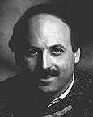

 Nat Segaloff
Nat Segaloff, co-founder of Alien Voices, brings into the company's multi-media mix a background in newspapers, teaching, broadcasting and film marketing. Born in Washington, D.C. and raised in Silver Spring, Maryland, he fled to Boston for college and stayed to become a popular media wag. As a journalist for The Boston Herald he was the only film critic who routinely covered motion pictures as an industry. He has also variously been a studio publicist, teacher (Boston University, Boston College), television producer ("P.M." and "Evening" Magazines), entertainment editor and commentator (CBS radio) and author (five books including "Hurricane Billy: The Stormy Life and Films of William Friedkin" and, with Daniel M. Kimmel, "Love Stories: Hollywood's Most Romantic Movies"). He has also contributed significant monographs on screenwriters Stirling Silliphant and Walon Green to Backstory III (University of California Press, 1996). His writing has appeared in Film Comment, Animation Magazine, The Christian Science Monitor, Time Out and American Movie Classics Magazine among other periodicals.
He is the co-author -- with Daniel M. Kimmel and Arnie Reisman -- of "The Waldorf Conference," a play about the secret meeting that began the Hollywood Blacklist, that had its all-star world premiere at L.A. Theatre World in 1993.
Produced by Susan Albert Loewenberg and directed by John de Lancie, the production starred Edward Asner, Charles Durning, John Randolph, Shelley Berman, Ron Rifkin and John Schuck. The project is now in active development as a theatrical feature.
Most recently, Segaloff crafted documentaries for the popular "Biography" series on the Arts & Entertainment Network. Among his well-received episodes are "John Belushi: Funny You Should Ask," "Shari Lewis & Lamb Chop," "Larry King: Talk of Fame," "Darryl F. Zanuck: Twentieth Century-Filmmaker" and "Stan Lee: The Comix-MAN!"
He has also written and/or produced programming for New World Entertainment, Disney/Buena Vista and TNT/Turner Classic Movies. His cheeky sequel to the Orson Welles "Invasion From Mars" radio hoax -- titled "When Welles Collide" and featuring an all-"Star Trek" cast -- was co-written with John de Lancie, who also directed. Produced by L.A. Theatre Works and KCRW-FM in 1994, it has become a Halloween tradition on National Public Radio. It was that experience that led de Lancie, Leonard Nimoy and Segaloff to create the multi-media science fiction production company Alien Voices, Inc.
Segaloff currently lives in Los Angeles and really tries to returns phone calls.
Click Profiles for biographies of other Alien Voices participants.